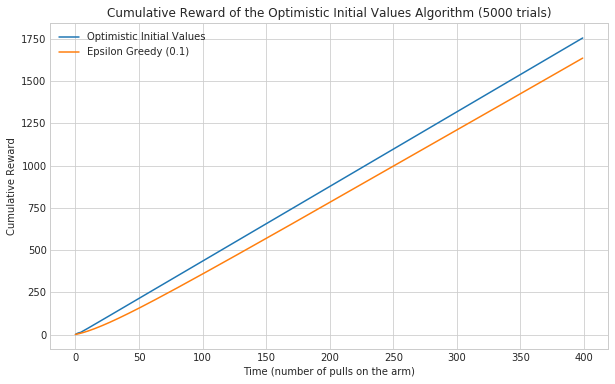
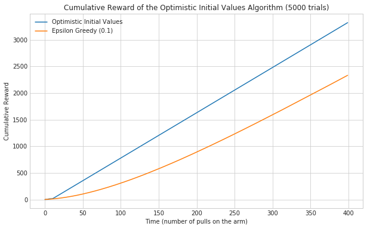
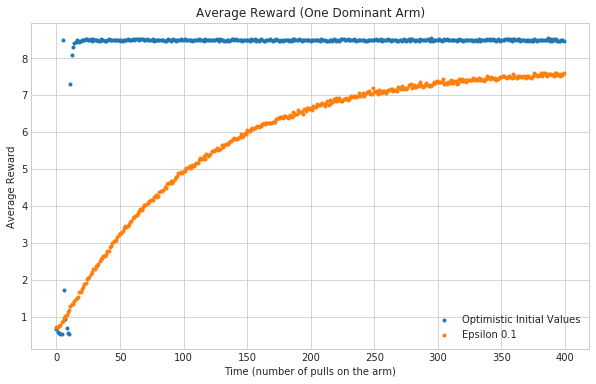

System Message: ERROR/3 (<string>, line 42)
Cannot find pygments lexer for language "ipython"
.. code:: ipython
@jit
def cumulative_reward(agent, times=5000, trials=400):
"""this generates the cumulative reward as the agent pulls the arms
Args:
agent: implementation that selects and updates the arms
trials (int): number of times to train the agent
times (int): length of time to train the agent
Returns:
numpy.array: average cumulative rewards over time
"""
cumulative_rewards = numpy.zeros(times)
for trial in range(trials):
for time in range(times):
arm = agent.select_arm()
agent.update(arm)
cumulative_rewards[time] += agent.total_reward
agent.reset()
return cumulative_rewards/trials
System Message: ERROR/3 (<string>, line 64)
Cannot find pygments lexer for language "ipython"
.. code:: ipython
def plot_cumulative(cumulative):
"""generates and plots cumulative average
Args:
cumulative (pandas.DataFrame): data to plot
"""
figure = plot.figure(figsize=(10, 6))
axe = figure.gca()
axe.set_title("Cumulative Reward of the Optimistic Initial Values Algorithm ({} trials)".format(TRIALS))
axe.set_xlabel("Time (number of pulls on the arm)")
axe.set_ylabel("Cumulative Reward")
cumulative.plot(ax=axe)
return
System Message: ERROR/3 (<string>, line 80)
Cannot find pygments lexer for language "ipython"
.. code:: ipython
TRIALS = 5000
TIMES = 400
similar_payout_rates = numpy.arange(1.0, 6.0)
numpy.random.shuffle(similar_payout_rates)
one_good_arm_rates = numpy.array([1.0] * 10 + [9.0])
numpy.random.shuffle(one_good_arm_rates)
4.1 Similar Arms
This will create a range where each arm only differs by 0.1
System Message: ERROR/3 (<string>, line 94)
Cannot find pygments lexer for language "ipython"
.. code:: ipython
optimistic_agent = OptimisticInitialValues(similar_payout_rates, 10.0)
data = {}
data["Optimistic Initial Values"] = cumulative_reward(optimistic_agent, trials=TRIALS, times=TIMES)
epsilon_agent = EpsilonGreedyNormal(0.1, similar_payout_rates)
data["Epsilon Greedy (0.1)"] = cumulative_reward(epsilon_agent, trials=TRIALS, times=TIMES)
data = pandas.DataFrame.from_dict(data)
plot_cumulative(data)
The Optimistic Initial Values agent does better than the Epsilon Greedy, as you would expect (since it eventually stops exploring). But it looks suspisciously linear.
4.2 One Good Arm
Lets see how it goes when one arm dominates the payouts.
System Message: ERROR/3 (<string>, line 113)
Cannot find pygments lexer for language "ipython"
.. code:: ipython
numpy.random.shuffle(one_good_arm_rates)
optimistic_agent = OptimisticInitialValues(one_good_arm_rates, 10.)
data = {}
data["Optimistic Initial Values"] = cumulative_reward(optimistic_agent, trials=TRIALS, times=TIMES)
epsilon_agent = EpsilonGreedyNormal(0.1, one_good_arm_rates)
data["Epsilon Greedy (0.1)"] = cumulative_reward(epsilon_agent, trials=TRIALS, times=TIMES)
data = pandas.DataFrame.from_dict(data)
plot_cumulative(data)
It looks like the optimistic agent does even better with one dominant arm. Likely because it found it quick enough that always exploiting it gives it a huge advantage over the epsilon greedy, which never stops exploring.
System Message: ERROR/3 (<string>, line 128)
Cannot find pygments lexer for language "ipython"
.. code:: ipython
@jit
def average_reward(agent, times=1000, trials=100):
"""this generates the average reward for the trials over time
Args:
trials (int): number of times to train the agent
times (int): length of time to train the agent
Returns:
numpy.array: the average reward
"""
average_rewards = numpy.zeros(times)
for trial in range(trials):
for time in range(times):
arm = agent.select_arm()
old_reward = agent.total_reward
agent.update(arm)
average_rewards[time] += (agent.total_reward - old_reward)
agent.reset()
return average_rewards/trials
System Message: ERROR/3 (<string>, line 150)
Cannot find pygments lexer for language "ipython"
.. code:: ipython
data = {}
data["Optimistic Initial Values"] = average_reward(optimistic_agent, TIMES, TRIALS)
data["Epsilon 0.1"] = average_reward(epsilon_agent, TIMES, TRIALS)
System Message: ERROR/3 (<string>, line 156)
Cannot find pygments lexer for language "ipython"
.. code:: ipython
averages = pandas.DataFrame.from_dict(data)
System Message: ERROR/3 (<string>, line 160)
Cannot find pygments lexer for language "ipython"
.. code:: ipython
figure = plot.figure(figsize=(10, 6))
axe = figure.gca()
axe.set_title("Average Reward (One Dominant Arm)")
axe.set_xlabel("Time (number of pulls on the arm)")
axe.set_ylabel("Average Reward")
averages.plot(ax=axe, marker='.', linestyle="None")
It looks like there was a brief period where the Epsilon Greedy did better, but the Optimistic agent settled in fairly quickly.